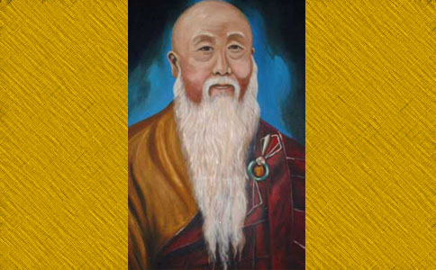

释道阶（西元1870～1934年），俗姓许，名常践，号晓钟。
他在峡山二端寺掩关三年，又从南岳默庵长老阅藏，学习
在衡山西禅寺首次开座讲《
受请出任金钱山寺住持。
光绪二十七年（一九○一年） 在金钱山寺开讲《弥陀要解》及《二时课诵》。并开坛传授千佛大戒，度僧三百余人，可谓盛况空前。光绪二十八年（一九○二年），寄禅和尚受请为宁波天童寺住持，道阶亦受寄禅之请，到天童寺开讲《弥陀便蒙钞》、《成唯识论》。以后又到宁波七塔寺、南京毗卢寺等处，讲《法华经》、《
他出国周游，先后到过星马、南洋
回国之后，他发起为金钱山寺请《
他为迎请清廷颁赐的《龙藏》到了北京，为金钱山寺请得一部《大藏经》，护送回湘。在京期间，他曾到山西礼朝
他以入京请藏的因缘，得识京中法源寺住持智果禅师，智果对道阶的道学非常崇仰，欲揽为法嗣，光耀祖庭。道阶
法源寺是历史名刹，建于唐初。唐太宗李世民东征高丽，旋师时驻跸于此，建寺
八指头陀寄禅和尚为保护全国寺产，在上海联合十七省
湖南宝庆发
道阶又回到湖南，历任南岳祝圣寺、罗汉寺、花药寺住持，后来又任北京宛平县天宁寺、天中寺住持。
民国九年（一九二○年）又回到法源寺任住持，这时他倡导编修《新续高僧传》，三年成书六十卷。
民国十四年（一九二五年）日本召开“东亚佛教大会”，我国佛教界组织中华代表团参加，太虚、道阶、胡瑞霖、王一亭等四人被推为大会副会长。大会期间，道阶且被推为正副团长，出席参加。会后游览日本名胜古刹，返国时曾顺道在台湾上岸，游览全省名胜，考察台湾佛教状况。
民国十五年（一九二六年） 奉军入关，张作霖出任大元帅，成为北京新主人。张的谋臣杨宇庭利用职权，藉故迫使道阶出国游历，而迎请在东北弘法的倓虚法师住持法源寺，未几北伐成功，奉军退出北平，道阶的法徒空也就乘机逐走倓虚，自任住持。未及二年，寺中又改选道阶的法徒德玉为住持。德玉后来随道阶到印度，重建
道阶在出国游历期间，曾代表中华佛教会，出席缅甸召开的“世界佛教会议”。之后到印度，参加鹿野苑摩诃菩提会所建的寺塔落成典礼。道阶于会中发愿，重建我国唐代僧侣在鹿野苑所建的支那寺。后来得到新加坡华侨李俊承的资助，卒如所愿。改建后的支那寺，更名为“中华寺”。
民国二十一年（一九三二年）初他游历槟榔屿、怡保、吉隆坡、新加坡等地，常驻锡于普陀寺。两年后，一九三四年的三月十五日，他示寂于怡宝的三宝洞。世寿六十五，僧腊四十七。荼毗后舍利极多，送回北平法源寺供养。
道阶对佛教的最大贡献，是他倡修《新续高僧传》六十卷。我国的高僧传，是佛教史的精华。梁代慧皎撰《梁高僧传》十六卷，至梁天监年而止。唐代道宣撰《续高僧传》，至唐贞观年而止，宋代赞宁撰《宋高僧撰》，明代如惺撰《明高僧传》，仅成六卷，曰《明僧卷》。但宋、明的名称则不合事实。因为宋传所载的是唐、五代人。明传所载的是宋、元代人，明传且遗漏颇多。道阶乃商请衡阳宿儒喻谦号昧庵者，主纂续传。上自北宋，下迄清末宣统年，千百年来，硕德耆宿，莫不采录。历经五年，成书六十卷，这是他对佛教的最大贡献。
（注：“不孝有三，无后为大”其实此话，古圣的本意是指，如果不把